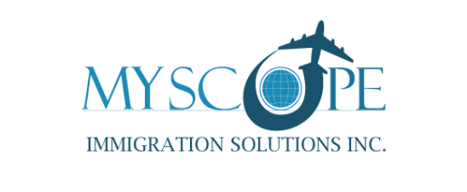
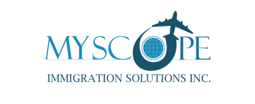
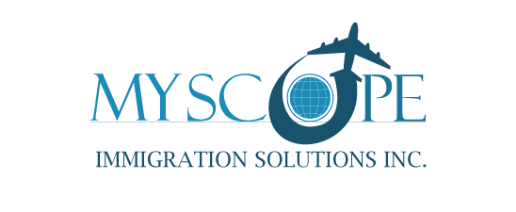
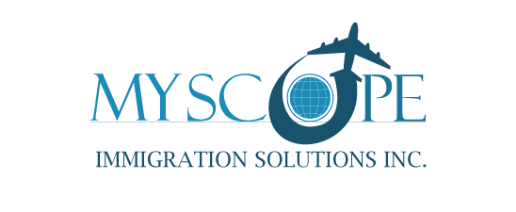

PERMANENT IMMIGRATION PATHWAYS
EXPRESS ENTRY: Canada welcomes approximately 400,000 new immigrants every year.
Express Entry is a selection process through which IRCC selects Candidates for Permanent Residence in Canada. All applicants make an expression of interest and are entered into a pool of applications. Highest ranked Candidates are invited to apply for Permanent Residence via regular draws. This is one of the fastest ways for immigrating to Canada directly as a permanent resident, if you qualify. Applicants receive points for factors like: Age, Education, Language, Work Experience, and Adaptability etc.
NOTE: Please note that Express Entry applications are much more than creating an initial profile. It is a crucial stage and missing, incomplete or wrong information or inability to provide required documents after receiving an Invitation to Apply, can not only lead to a refusal, but can also jeopardize your chances for permanent residence in future. We can guide you through the complex maze of the process including guiding you how to obtain a provincial nomination and use it for additional points for your Express Entry.
This program can be classified into 3 main categories
skilled workers who have at least 1 year of work experience in Canada in eligible NOC categories, may be eligible to apply for Permanent residency under this stream. There are specific language, work experience and other requirements. of workers who have at least 1 year of work experience in Canada in eligible NOC categories, may be eligible to apply for Permanent residency under this stream. There are specific language, work experience and other requirements.
This stream allows professionals and skilled workers to obtain Canadian permanent resident status for themselves and their families. You may be eligible if you have enough funds for settlement in Canada; evidence of an approved test of required language competency in English and/French; evidence of completion of secondary (high school) education or a foreign equivalent.
Applicants applying under this class must demonstrate: At least 2 years full-time (or part-time equivalent)of work experience in a skilled trade within last 5 years, must have full-time job offer in Canada from a Canadian Employer, of at least one year in length or a Certificate of Qualification in your trade. Without an offer of employer, you must demonstrate sufficient finances to immigrate to Canada. There are specific language skills and other requirements. You must intend to live outside the province of Quebec.
At Myscope Immigration Solutions, we ensure applicants select the correct NOC for their specific occupation, ensuring they are credited with the experience they deserve.
Our team can ensure that you meet all requirements from the start to ensure a smooth process towards permanent residency.
SPONSORSHIP UNDER FAMILY CLASS:
Canadian Citizens or permanent residents can sponsor their family members to get permanent residency in Canada, through following family reunification programs-
Spousal sponsorship (including same-sex spousal)
Sponsorship Common-law sponsorship(including same-sex spousal sponsorship)
Conjugal Partner sponsorship(including same-sex spousal sponsorship)
Parent/grandparent sponsorship - Canadian citizens or permanent residents can sponsor their parents and grandparents for permanent residency if they meet LICO (low-income cut-off) plus 30% based on the number of family members for 3 years prior to the application for the last 3 tax years.
Dependent child(natural or adopted) sponsorship
As with all applications, specific conditions, eligibility criteria and some restrictions apply to each of the above mentioned categories.
Work with professionals to save time, create a strong application, and give your best shot for sponsoring your loved ones.
At MYSCOPE IMMIGRATION SOLUTIONS, we can help you compile a complete application to avoid delays and possibilities of rejection.